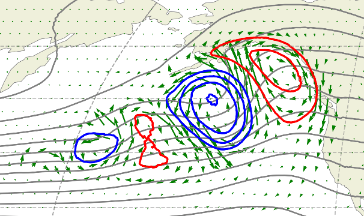
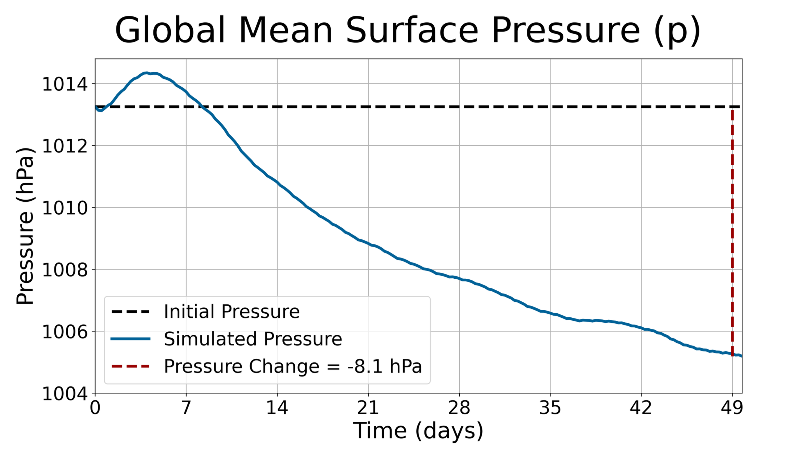
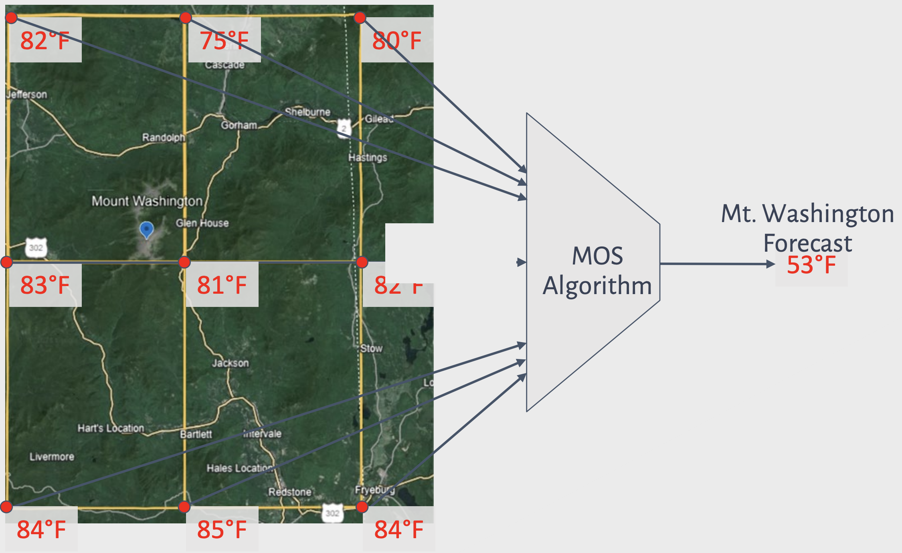
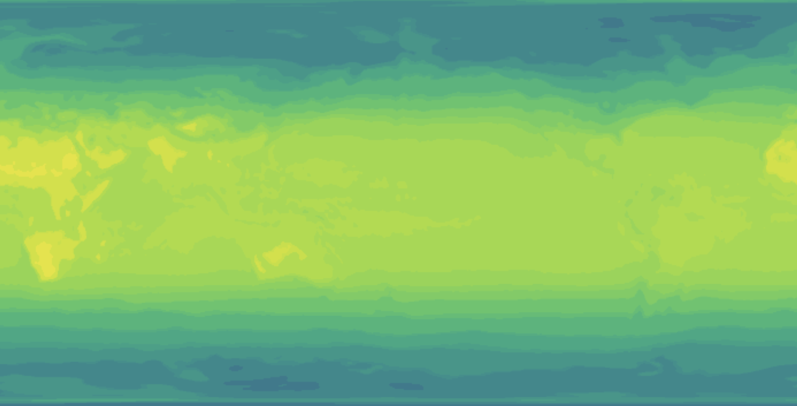
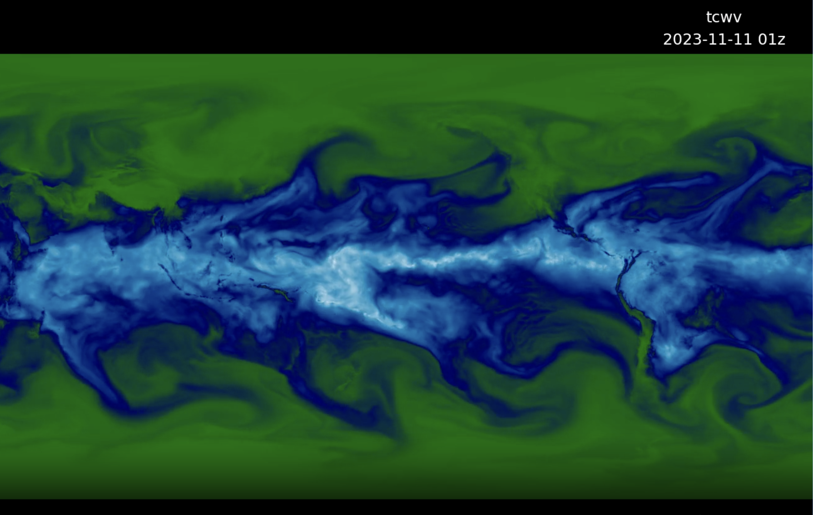
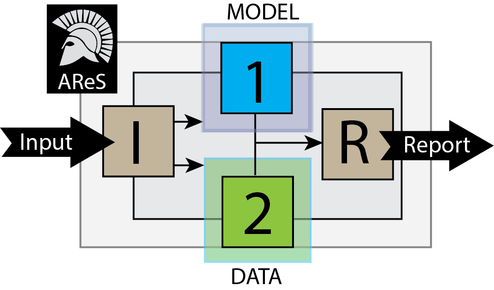

Projects
2026-03

HM24 Replication
Expanding on the results of Hakim and Masanam (2024)
2026-01

Testing Conservation in AI Models
How do current weather models perform in conserving key physical quantities?
2025-06

DCMIP25
My story of helping to organize, build, and lead DCMIP25's first AI analysis
2024-08

MWOBS MOS
A quantitative comparison of weather forecasting tools on Mount Washington
2024-04

Implicit Topography
Investigating the phenomenon of topographic features appearing in weather models where they do not exist in initial conditions
2023-12

Atmosphere Visualizer
A simple tool I made for anybody to visualize ERA5 atmospheric data
2023-08
Are They What They Claim?
An comparison of ordinary least squares implementations across Python libraries
2023-08

AReS
An AutoML Regression Service for data analytics and novel data-centric visualizations